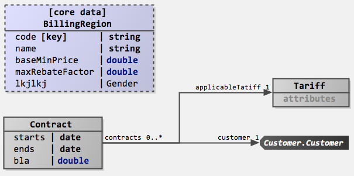

Diagrams
Language Namespace : de.itemis.mps.editor.diagram
Example from Mbeddr
The following screenshots show component wiring and state machines that can be edited graphically.

This screenshot shows a few interesting features: you can embed diagrams anywhere in "text", you can use different shapes (at this point drawn by custom Java code), you can use various line styles, the framework supports ports (i.e., connection endpoints on the boxes), inside boxes you can use arbitrary MPS text (or other) editors, and the system also supports edge and endpoint labels. Port labels are also supported, but they are only shown if the mouse is "in the vicinity" of the port to not clutter the diagram. Below is a second screenshot of a bigger diagram:
This one illustrates that the approach scales to reasonable sizes, shows that zooming is supported and also demonstrates the auto layouting capability. The graphical notation also integrates with things such as tooltips. Below is another example diagram that shows a different language:

The definition of a graphical editor is based on the same "cell" abstraction used in other MPS editors: the language for defining editors contains additional cells that are then rendered as a diagram (diagram, diagram.box, diagram.edge). Similar to tables, these abstractions for defining graphical editors rely on queries to make sure that the structure of the graphical editor does not have to directly correspond to the structure of the AST (for example, in terms of ownership). The language also supports hierarchical diagrams, for example, in state machines.
To see example code, check out InstanceConfiguration and Statemachine in the mbeddr repository.
Diagram Algorithms
The language provides different layout algorithm options for diagram. Each algorithm computes the graph with specialized edges, routing and direction styles.
Layered Algorithm
This algorithm implements the graph with the direction of edges by pointing as many edges as possible into the same direction. Layered algorithm provides extra configuration options to modify the graph.
-
Hierarchy handling: setting this option to
INCLUDE_CHILDRENstyles the graph in a single layout run, until a descendant is encountered which has its hierarchy handling set toSEPARATE_CHILDREN. In general, this ensures that a new layout run is triggered with that setting. Including multiple levels of hierarchy in a single layout run may allow cross-hierarchical edges to be laid out properly. -
Edge routing: this property applies edge route styles for the content of a parent node. Algorithms may also set this option to single edges in order to mark them as splines. The bend point list of edges with this option set to
SPLINESmust be interpreted as control points for a piecewise cubic spline. -
Subdiagram direction: this option is set to apply the overall direction of edges: horizontal (
RIGHT/LEFT) or vertical (DOWN/UP). -
Cycle breaking strategy: cycle breaking looks for cycles in the graph and determines which edges to reverse to break the cycles. Reversed edges will end up pointing to the opposite direction of regular edges (that is, reversed edges will point left if edges usually point right).
Issues
There's a meta issue for known issues.